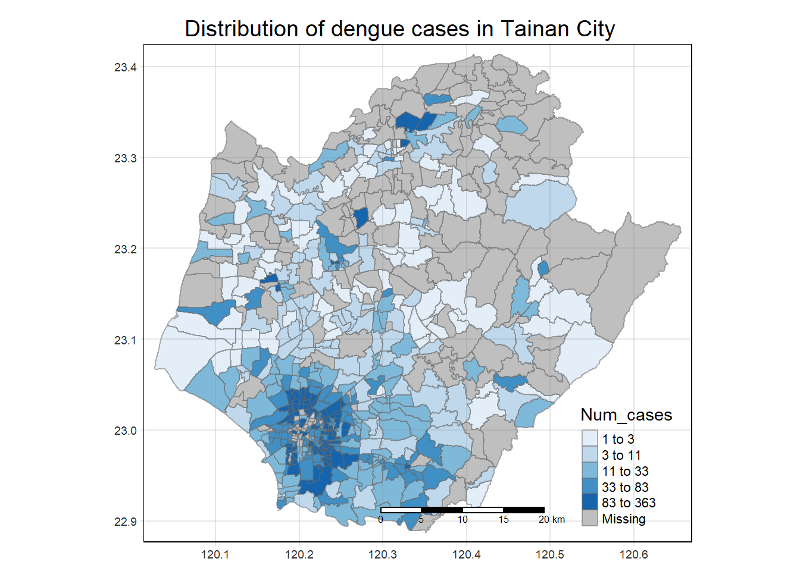

Code
install.packages("maptools", repos = "https://packagemanager.posit.co/cran/2023-10-13")Some parts of this document have hidden codes that are kept PRIVATE for now. They contain confidential codes. I will ONLY show these hidden codes on 1 March 2024 (week 9).
I will ONLY provide explanations for the exercise right now, and it is subjected to change during the duration of this exercise.
It is important to be honest and fair in our work, and respect the privacy of the work of others, so as to uphold academic integrity throughout the duration of this take-home exercise.
Dengue Hemorrhagic Fever (in short dengue fever) is one of the most widespread mosquito-borne diseases in the most tropical and subtropical regions. It is an acute disease caused by dengue virus infection which is transmitted by female Aedes aegypti and Aedes albopictus mosquitoes. In 2015, Taiwan had recorded the most severe dengue fever outbreak with more than 43,000 dengue cases and 228 deaths. Since then, the annual reported dengue fever cases were maintained at the level of not more than 200 cases. However, in 2023, Taiwan recorded 26703 dengue fever cases. Figure below reveals that more than 25,000 cases were reported at Tainan City.

As a curious geospatial analytics green horn, you are interested to discover:
if the distribution of dengue fever outbreak at Tainan City, Taiwan are independent from space and space and time.
If the outbreak is indeed spatial and spatio-temporal dependent, then, you would like to detect where are the clusters and outliers, and the emerging hot spot/cold spot areas.
install.packages("maptools", repos = "https://packagemanager.posit.co/cran/2023-10-13")Installing the required tools for the analysis (e.g. sf, tidyverse, maptools, etc)
pacman::p_load(maptools, sf, raster, spatstat, tmap, tidyverse, arrow, lubridate, dplyr, spNetwork, spacetime)This is where we import the data and prepare it before analysis.
Let’s use st_read() of sf package to import these two geospatial data sets into R. And we will be using other functions to prepare our data upon importing them. Moreover, we will also perform some simple operation on the datasets to gather some basic analysis.
The 2 data sets are:
TAIWAN_VILLAGE_2020, a geospatial data of village boundary of Taiwan. It is in ESRI shapefile format. The data is in Taiwan Geographic Coordinate System. (Source: Historical map data of the village boundary: TWD97 longitude and latitude)
Dengue_Daily.csv, an aspatial data of reported dengue cases in Taiwan since 1998. (Source: Dengue Daily Confirmed Cases Since 1998. Below are selected fields that are useful for this study:
發病日: Onset date
最小統計區中心點X: x-coordinate
最小統計區中心點Y: y-coordinate
Firstly, we will import the data for the Taiwan Village Data
taiwan_village_sf <- st_read(dsn = "data/geospatial", layer = "TAINAN_VILLAGE")Let’s check the referencing system info of this taiwan_village_sf
st_crs(taiwan_village_sf)Currently, we have 649 rows of data in taiwan_village_sf.

Therefore, we have to filter the taiwan_village_sf for village level of D01, D02, D04, D06, D07, D08, D32, and D39 of the Tainan City, Taiwan
Now, filtered_taiwan_village_sf will consist of 258 rows of data. This will help to reduce the amount of data that is needed to be processed in the later parts.

Since we’re happy with the dataset for filtered_taiwan_village_sf, let’s save it to a rds so that it would be easier for us to retrieve it in the future
Import the filtered_taiwan_village_sf rds data
Let’s visualise how filtered_taiwan_village_sf looks like when we plot it

Firstly, we will import the data for the Dengue Data
dengue_sf <- read_csv("data/aspatial/Dengue_Daily.csv")As dengue_sf consists of 106861 rows of data, with 26 types of variables, as shown below. Therefore we need to filter it

Let’s filter dengue_sf for fever cases that are confined to epidemiology week 31-50 of 2023, as well as the selected variables which we will be working with (發病日: Onset date, 居住縣市: County, 居住鄉鎮: Town, 居住村里: Village, 最小統計區中心點X: x-coordinate, 最小統計區中心點Y: y-coordinate)
In the code chunk above, we filtered the specific data that falls under the weeks that we are interested to look into. Moreover, we also use the “select” line to select the specific variables that we deemed useful for our research.
After filtering dengue_sf, and storing it in filtered_dengue_sf, the amount of data has reduced significantly from 106861 rows of data in dengue_sf, to 25480 rows of data in filtered_dengue_sf (with 3 types of variables).

Let’s check the data type of each variable before we proceed to performing left-join
Let’s transform some of our variables and prepare it for the left-join operation in step 2.3
Let’s create 3 different variables that stores the week number, month and day respectively. This is to facilitate our research and analysis in the later parts of this take-home exercise.
However, in our dengue dataset, we have noticed that there are rows of data with no village name. As our research is focused mainly on the village level, we will remove the rows with village name = “None”.

Since we have the finalised filtered_dengue_sf, it is important for us to create a new table to store the number of cases, grouped by the day and village. We will store it in cases_by_day_village dataset.
In addition to the cases_by_day_village dataset, it would be useful for us to create a new table to store the number of cases, grouped by the week and village. We will store it in cases_by_week_village dataset.
To get the number of cases in througout Tainan city during the whole epidemiology week 31-50, it would be useful for us to create a new table to store the number of cases for each village. We will store it in cases_by_village dataset.
To get the number of cases in a week througout Tainan city, it would be useful for us to create a new table to store the number of cases, grouped by the week alone. We will store it in cases_by_week dataset.
Now, we have found valuable analysis from our dataset, let’s move on to the next section where we keep them in rds form.
Since we’re happy with the dataset for filtered_taiwan_village_sf, and datasets from our analysis in 2.2.3, let’s save it to a rds so that it would be easier for us to retrieve it in the future
Import the filtered_taiwan_village_sf rds data
Let’s take a look at our Dengue datasets in 2.2 :)
filtered_dengue_sf
cases_by_day_village, cases_by_week_village, cases_by_week
knitr::include_graphics(c(“images/clipboard-643780030.png”, “images/clipboard-2120919932.png”))
Let’s perform a left-join to combine the variables in filtered_taiwan_village_sf and filtered_dengue_sf.
Our goal is to perform left-join to the cases_by_week_village and supplement it with the specific geospatial and relevant variable. We will be operate the left-join operation based on the Village Name of both dataset as we want to retrieve the distinct geospatial infromation from filtered_taiwan_village_sf for each dengue cases.
The reason for using cases_by_week_village is because we are focusing on the number of cases in each village on a weekly basis.
The left-join dataset would be named taiwan_village_dengue
After performing the left-join operation, the taiwan_village_dengue dataset seems to have “NA” values. This is due to the fact that the village name (居住村里) value in the filtered_dengue_sf is not found in the list of village name (VILLNAME) in filtered_taiwan_village_sf.
st_crs(taiwan_village_dengue)Apparently, the “NA” values were due to the fact that the cases were captured in other counties, apart from the Tainan City, of which one of the NA data were in Yunlin County. As we have already filtered the filtered_taiwan_village_sf to only keep data pertaining to the counties of Tainan City, the left-join would result in cases that fall in county outside of Tainan city to be “NA”.
Therefore, we have to remove the “NA” values as we would not be focusing on cases which are not within Tainan City.
Now, we have 17732 rows of data for the cases within the counties of Tainan City, and within the weeks which we are focusing on.

Since we are happy with our finalised taiwan_village_dengue dataset, let’s keep it in our rds for easy reference in the future
Import the filtered_taiwan_village_sf rds data
Let’s take a look at our taiwan_village_dengue dataset :)

tmap_mode("plot")
tm_shape(taiwan_village_dengue) +
tm_fill("Num_Cases",
style = "quantile",
palette = "Blues",
title = "Num_cases") +
tm_layout(main.title = "Distribution of dengue cases in Tainan City",
main.title.position = "center",
main.title.size = 1.2,
legend.height = 0.45,
legend.width = 0.35,
frame = TRUE) +
tm_borders(alpha = 0.5) +
# tm_compass(type = "Bstar", size = 2) + # Comment or remove this line
tm_scale_bar() +
tm_grid(alpha = 0.2)
Sorting and Counting the cases
Let’s create a table to view the number of cases per day. We will be using groupy() to sort the dataset, and n() to count the cases.
We can see the total number of cases for each day without looking through the original dataset. (this is just a snippet of the first 5 rows of the dataset)

Saving it to RDS
Since we are happy with our finalised daily_dengue_numbers dataset, let’s keep it in our rds for easy reference in the future
Import the daily_dengue_numbers rds data
Sorting and Counting the cases
Let’s create a table to view the number of cases per week. We will be using groupy() to sort the dataset, and n() to count the cases.
We can see the total number of cases for each week without looking through the original dataset. (this is just a snippet of the first 5 rows of the dataset)

Saving it to RDS
Since we are happy with our finalised weekly_dengue_numbers dataset, let’s keep it in our rds for easy reference in the future
Import the weekly_dengue_numbers rds data
Sorting and Counting the cases
Finally, for our research focus, let’s create a table to view the number of cases per week in each village. We will be using groupy() to sort the dataset, and n() to count the cases.
We can see the total number of cases for each week for each village, without looking through the original dataset. (this is just a snippet of the first 5 rows of the dataset)

Saving it to RDS
Since we are happy with our finalised weekly_dengue_numbers_in_each_village dataset, let’s keep it in our rds for easy reference in the future
Import the weekly_dengue_numbers_in_each_village rds data
Let’s save the sf as a df in the rds folder (for future reference)
Let’s import the rds for this exercise
{r} taiwan_village_df <- read_rds("data/rds/taiwan_village_df.rds")}